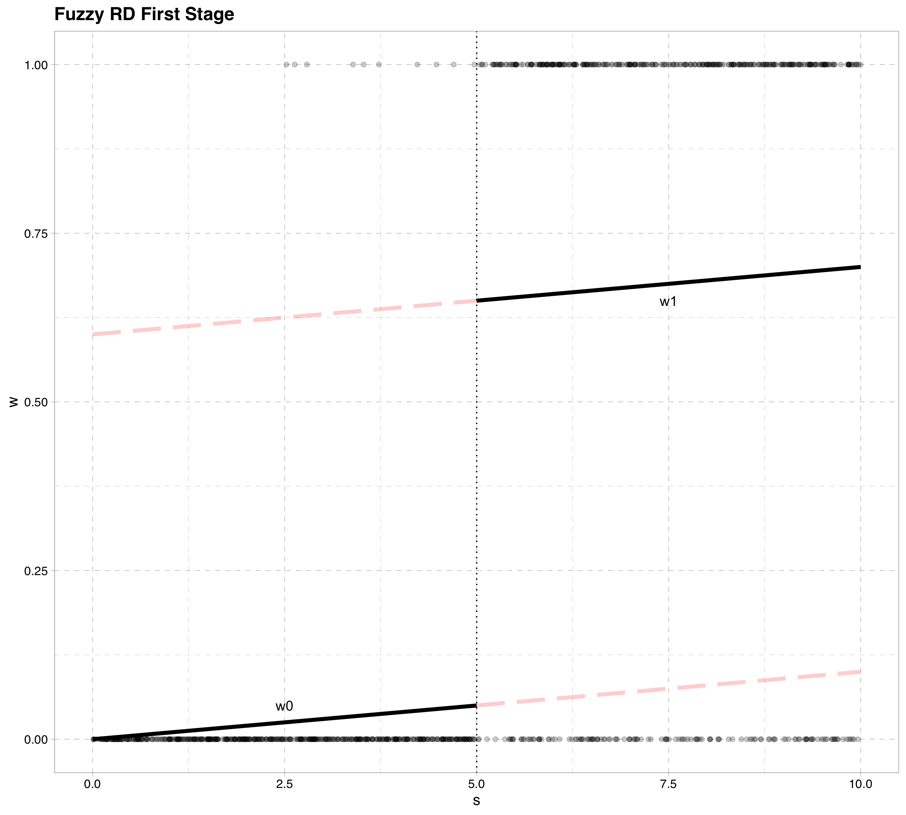
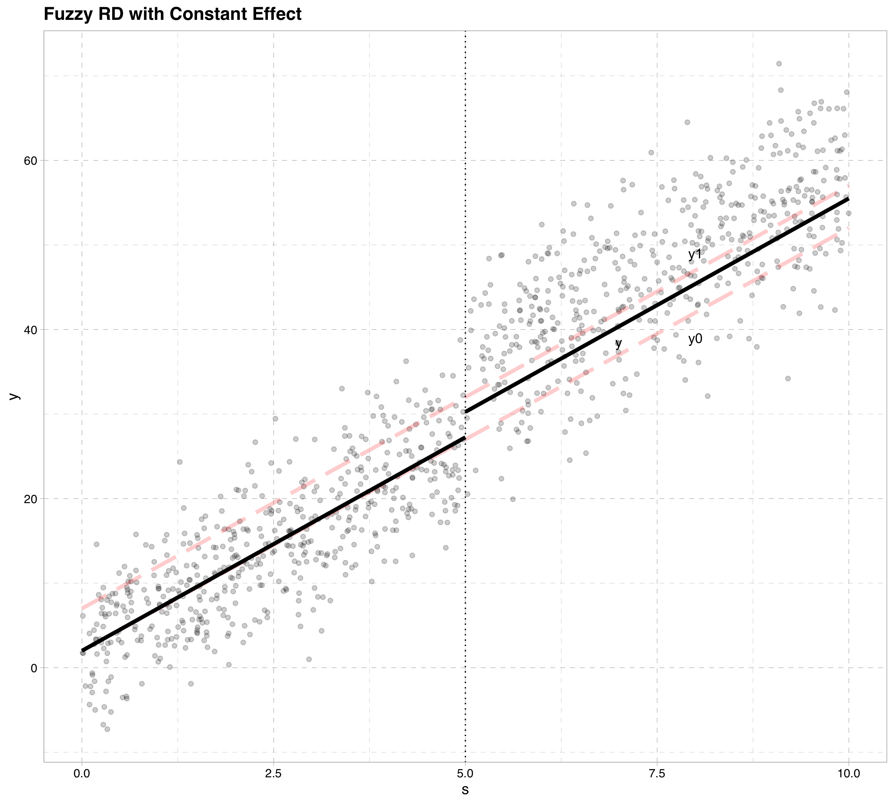

EC655
Justin Smith
Wilfrid Laurier University
Fall 2022
RD is a popular method to identify causal treatment effects
The method mimics a randomized experiment
People are assigned to treatment or not based on some known continuous variable
Around the cutoff people share similar characteristics, except for the treatment
Thus, looking at outcome differences for those just above cutoff compared to just below will reveal causal effect of treatment
It identifies a local LATE
It is LATE in the sense we defined in instrumental variables
Also, it focuses on people in the immediate vicinity of the discontinuity
Example: Milligan and Lemieux (2008)
Effect of social assistance on employment
Amount of social assistance determined by age
Before 1989, 30+ year olds got roughly $550 in monthly benefits
Those under 30 got roughly $200
Treatment is getting more social assistance
People around age 30 are roughly similar on agerage
Compares employment rates for 30 year olds to those just under 30
Reveals causal effect of getting more benefits on employment
Results show more benefits means lower employment rates
Recall the potential outcomes model
\[y = y_{0} + (y_{1} - y_{0})w\]
Suppose we also know the following information about the treatment \[w = 1[S\ge \bar{S}]\]
All those with \(S\ge \bar{S}\) get the treatment
\(S\) is called the “running variable” or “forcing variable”
e.g. if \(S\) is age, those 30+ get extra benefits
If we compute difference in means, we run into selection bias
\[E[y|w=1] - E[y|w=0]\] \[= E[y_{1} - y_{0}|w=1] + E[y_{0}|w=1]- E[y_{0}|w=0]\]
Because \(w = 1[S\ge \bar{S}]\)
Untreated outcome different for those above cutoff and those below
e.g. employment with lower benefits different for those over 30
Consider conditional mean independence of \(y_{0}\)
\[E[y_{0}|w,S]- E[y_{0}|S]\]
For the same \(S\), untreated outcome does not vary with \(w\)
This assumption is true because of the structure of the treatment \(w\)
Treatment is fully determined by \(S\)
Those above the cutoff in \(S\) get the treatment
People below it do not get treatment
One way to model this assumption is \[y_{0} = \beta_{0} + \beta_{1} S + \eta\] \[y_{1} = y_{0} + \rho\]
Notice that \(y_{0}\) is not a function of \(w\) when we control for \(S\)
Plug this into the equation for \(y\) \[y = \beta_{0} + \beta_{1} S+ \rho w + \eta\]
Computing the difference in expected outcomes conditional on \(S\) \[E[y|S, w = 1] - E[y|S, w = 0]\] \[= E[y_{1} - y_{0}|S, w=1] + E[y_{0}|S, w=1]- E[y_{0}|S,w=0]\] \[=\rho +(\beta_{0} + \beta_{1} S) - (\beta_{0} + \beta_{1} S)\] \[= \rho\]
Problem: we cannot compute \(E[y|S, w = 1] - E[y|S, w = 0]\)
Because \(w=1\) only for those with \(S\ge \bar{S}\)
And \(w=0\) only for those with \(S< \bar{S}\)
There is no “overlap” in these functions
Regression discontinuity focuses in on the area near the cutoff \[E[y|S = \bar{S}] - lim_{S\uparrow \bar{S}} E[y|S]\] \[= E[y_{1} - y_{0}|S = \bar{S}] +E[y_{0}|S = \bar{S}]- lim_{S\uparrow \bar{S}}E[y_{0}|S]\] \[=\rho +E[y_{0}|S = \bar{S}]- lim_{S\uparrow \bar{S}}E[y_{0}|S]\] \[=\rho\]
The key assumption is the that \(E[y_{0}|S = \bar{S}]\) is continuous at \(S=\bar{S}\)
\[E[y_{0}|S = \bar{S}] = lim_{S\uparrow \bar{S}} E[y_{0}|S]\]
The idea behind these assumptions is
Compare average observed outcome just above cutoff to average outcome just below
They serve as good counterfactuals if potential outcomes not affected by treatment
e.g. social assistance benefits and employment
Compare mean employment rate for people just above and below age 30
Works if employment rates smooth across age 30 without treatment
Also if employment rates smooth across 30 with treatment
The way we have modelled \(y_{0}\) and \(y_{1}\) builds in this assumption
Based on our assumptions, the key result is \[E[y|S = \bar{S}] - lim_{S\uparrow \bar{S}} E[y|S]\] \[=E[y_{1} -y_{0} |S = \bar{S}] = \rho\]
Thus, RD estimates the average treatment effect at the cutoff point
You can also make the relationship between \(y_{0}\) and \(S\) nonlinear \[y_{0} = f(S) + \eta\]
All of the previous conclusions still follow
Here is how RD works intuitively
Individuals are assigned to treatment based on some variable \(S\)
Treatment is a deterministic function of \(S\)
Around the cutoff point \(\bar{S}\), there are no unobserved differences between the groups
We simply compare outcomes at the discontinuity, and that is our treatment effect
We could take sample averages in a small area around the cutoff and compare
Usually not much data in that vicinity
Variance will be high in those estimates
Researchers use this approach for description
Instead you can estimate the function below by OLS \[y = f(S) + \rho w + \eta\]
This allows data from outside the local cutoff area, so may be biased
But will have smaller variance
Researchers have mostly used this method
To estimate by OLS, you need to specify the function \(f(S)\)
Typically researchers use spline functions for this
A linear spline with the same slope on each side is the standard linear regression \[y = \beta_{0} + \beta_{1} S+\rho w + \eta\]
This estimates 2 lines with the same slope and an intercept shift at \(S = \bar{S}\)
If we want to allow the slopes to differ on each side of the cutoff, \[y = \beta_{0}+ \rho w + \beta_{1} S + \delta_{1} wS+\eta\]
This estimates 2 lines with the different slopes and an intercept shift at \(S = \bar{S}\)
Issue: \(\rho\) measures the intercept shift when \(S = 0\)
To do this, you must center the data first at \(\bar{S}\) \[y = \beta_{0} + \rho w + \beta_{1} (S - \bar{S}) + \delta_{1} w(S - \bar{S})+\eta\]
In RD models, you would typically include a polynomial in \(S\) \[y = \beta_{0} + \rho w + \beta_{1} (S - \bar{S}) + \beta_{2} (S - \bar{S})^{2}+ \beta_{3} (S - \bar{S})^{2}\] \[+ \delta_{1} w(S - \bar{S})+ \delta_{2} w(S - \bar{S})^{2}+ \delta_{3} w(S - \bar{S})^{3}+\nu\]
You can get more complicated if needed
After specifying the \(f(S)\) function, you estimate as usual by OLS
Sometimes treatment is not fully determined by \(S\)
Suppose now we define \[z = 1[S > \bar{S}]\]
and \[w = g(S) + \pi z + \epsilon\]
What this says is that actual treatment is related to \(S\), but it is not a deterministic function of it
Using the potential outcomes framework here just as we did before
\[w_{0} = g(S) + \epsilon\] \[w_{1} = w_{0} + \pi\]
Like before, focus on the limits on each side of the cutoff
\[E[y|S = \bar{S}] - lim_{S\uparrow \bar{S}} E[y|S]\] \[= E[y_{0} + (y_{1} - y_{0})w_{1}|S = \bar{S}] - lim_{S\uparrow \bar{S}} E[y_{0} + (y_{1} - y_{0})w_{0}|S]\] \[= ( E[(y_{1} - y_{0})w_{1}|S = \bar{S}] - lim_{S\uparrow \bar{S}} E[(y_{1} - y_{0})w_{0}|S] ) + (E[y_{0}|S = \bar{S}] - lim_{S\uparrow \bar{S}} E[y_{0} |S] )\]
If \(E[y_{0}|S = \bar{S}]\) is continuous at the cutoff, we can drop the second term \[= ( E[(y_{1} - y_{0})w_{1}|S = \bar{S}] - lim_{S\uparrow \bar{S}} E[(y_{1} - y_{0})w_{0}|S] )\]
If \(lim_{S\uparrow \bar{S}} E[(y_{1} - y_{0})w_{0}|S] )\) is a good approximation for \(E[(y_{1} - y_{0})w_{0}|S=\bar{S}]\) \[= E[(y_{1} - y_{0})(w_{1}-w_{0})|S = \bar{S}]\]
If we make a monotonicity assumption (as we did in the LATE notes) \[= E[(y_{1} - y_{0})(w_{1}-w_{0})|S = \bar{S}] = E[y_{1} - y_{0}|w_{1}-w_{0}=1,S = \bar{S}] E[w_{1} - w_{0}|S = \bar{S}]\]
Finally, note that
\[E[w_{1} - w_{0}|S = \bar{S}] = E[w|S = \bar{S}] - lim_{S\uparrow \bar{S}} E[w|S]\]
Which brings us to
\[\frac{E[y|S = \bar{S}] - lim_{S\uparrow \bar{S}} E[y|S] }{E[w|S = \bar{S}] - lim_{S\uparrow \bar{S}} E[w|S] } = E[y_{1} - y_{0}|w_{1}-w_{0}=1,S = \bar{S}]\]
This says that at the cutoff point
If we compute differences in outcomes divided by difference in treatment
This equals the LATE at the cutoff point
Linking back to regression,
\[\frac{E[y|S = \bar{S}] - lim_{S\uparrow \bar{S}} E[y|S] }{E[w|S = \bar{S}] - lim_{S\uparrow \bar{S}} E[w|S] } = \frac{\rho\pi}{\pi} = \rho\]
This is the fuzzy regression discontinuity design
Difference in outcomes across the cutoffs
Scaled by the difference in average treatment
Key to note that this is a local LATE
LATE for compliers
Also specific to those who have \(S=\bar{S}\)


To estimate we use TSLS
Treat \(w\) as endogenous, and \(z\) as an exogenous instrument
\(S\) is the included instrument
The first stage is \[w= g(S) + \pi z+ \epsilon\]
Where the predicted values are \[w^{*}\]
Then we estimate the second stage as \[y = \rho w^{*}+ g(S) + \eta\]
In estimation, a spline function is used in both stages \[y = \beta_{0} + \rho w + \beta_{1} (S - \bar{S}) + \beta_{2} (S - \bar{S})^{2}+ \beta_{3} (S - \bar{S})^{2}\] \[+ \delta_{1} z(S - \bar{S})+ \delta_{2} z(S - \bar{S})^{2}+ \delta_{3} z(S - \bar{S})^{3}+\eta\] \[w = \alpha_{0} + \pi z + \alpha_{1} (S - \bar{S}) + \alpha{2} (S - \bar{S})^{2}+ \alpha_{3} (S - \bar{S})^{2}\] \[+ \theta_{1} z(S - \bar{S})+ \theta_{2} z(S - \bar{S})^{2}+ \theta_{3} z(S - \bar{S})^{3}+\epsilon\]
Notice how both spline functions interact with \(z\)
This breaks each function up to the left and right of the discontinuity
As long as we specify the spline functions to be the same in both equations this is an IV model, with \(z\) as an instrument for \(w\)
The treatment variable does not have to be binary
The method only works if the running variable \(S\) cannot be manipulated
Ex: Matsudaira (2008)
Effect of summer school on future performance with 50% grade cutoff
Kids may know the assignment rule to summer school
Some more “motivated” kids put in effort to not attend
Their non-treated outcomes differ on each side of the cutoff
i.e. \(lim_{S\downarrow \bar{S}}E[y_{0}|S] \neq lim_{S\uparrow \bar{S}}E[y_{0}|S]\)
If running variable is manipulated in a non-random way, RD is invalid and biased
Two ways to check if the running variable has been manipulated
Check for discontinuities in baseline variables
Treatment is expected to be discontinuous; this is where our variation comes from
However, near the discontinuity, any other variable must be continuous
If we had covariates (\(X\)) determined before treatment, we could check to see if they have discontinuities \[X=g(S) + \gamma z + e\]
If \(\gamma_{1} \neq 0\), then this may signal a problem
Check for discontinuities in the density of the running variable
A histogram may show “piling up” of people on one side of discontinuity
If so, this may signal a problem
See McCrary(2008) for more technical details